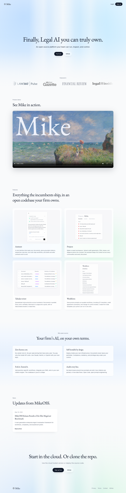
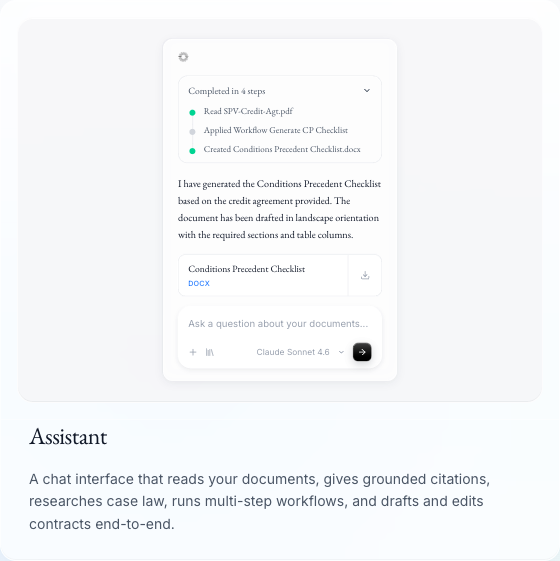
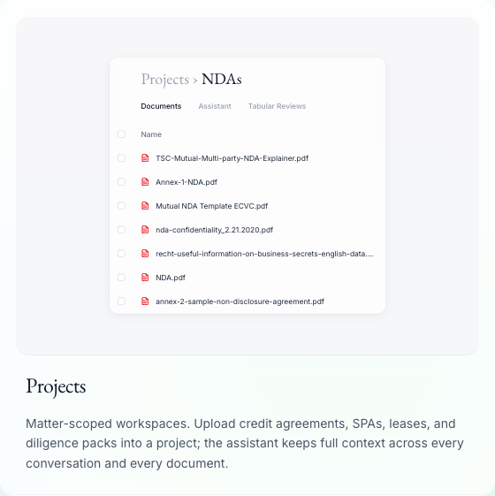
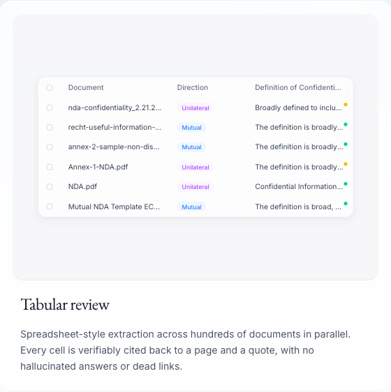
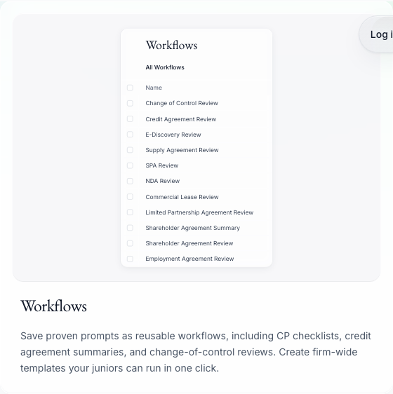
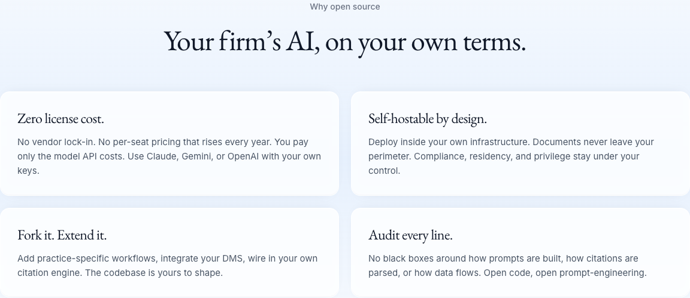
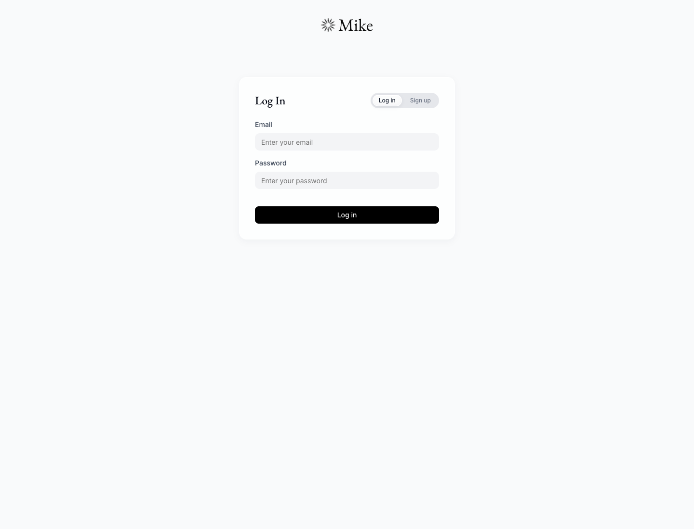

MIKEOSS -> LVDou
这不是竞品拆解，而是把 MikeOSS 转成律豆行动方案
目标不是复刻一个开源产品，而是提炼能让律豆更像“专业事项工作台”的可迁移机制。
1
看它如何组织事项、材料、流程和输出
2
判断哪些机制值得进入律豆智能体
3
落到可演示的客户场景，而不是功能堆叠

公开页面已经露出关键结构：助手、项目、表格审查、工作流、自部署。
材料来源：MikeOSS 公开站点与公开 GitHub 页面截图，采集日期 2026-06-23。
01 / 19
核心判断
MikeOSS 的启发是事项工作台，而不是页面样式
普通 AI 工具
用户面对一组机器人或 prompt，需要自己记住材料在哪里、任务到哪一步、输出是否可复核。
01机器人入口
02一次性对话
03结果散落
Tool
事项工作台
用户围绕一个事项组织材料、任务链、审查表和交付物，AI 是事项推进的一部分。
01事项容器
02可复用流程
03可追溯输出
Matter
本页只说一件事：迁移目标应是事项工作台机制。
02 / 19
采用门槛
MikeOSS 先卖可控制，法律 AI 才敢进入专业工作流
1开源与自部署降低黑箱感
2工作流结构让过程可解释
3多个模型与服务商减少锁定
Screenshot: MikeOSS home
本页只说一件事：控制感是法律 AI 进入专业流程的前置条件。
03 / 19
Assistant
Assistant 证明法律 AI 可以从材料走到交付物

1从 documents 读取事实
2按 workflow 执行任务
3产出可下载文件
Screenshot: Assistants card
本页只说一件事：Assistant 的核心价值是端到端任务链。
04 / 19
Project
Project 让法律事项上下文不再散落

1Documents 进入同一事项
2Assistant 继承事项上下文
3Tabular Reviews 留住判断结构
Screenshot: Projects card
本页只说一件事：Project 是专业上下文的容器。
05 / 19
Tabular Review
Tabular Review 的价值是让结论回到证据

1把审查维度表格化
2每条判断绑定原文
3律师可快速抽查
Screenshot: Tabular Reviews card
本页只说一件事：表格审查应服务证据追溯。
06 / 19
Workflow
Workflow 把一次性 prompt 变成团队资产

1流程可以被保存
2团队可以重复调用
3经验可以持续迭代
Screenshot: Workflows card
本页只说一件事：workflow 是经验资产化的载体。
07 / 19
Governance
自部署叙事本质上是在回答治理问题

Screenshot: Open source section
本页只说一件事：自部署背后是治理可接受性。
08 / 19
Moat 01
第一道护城河是用户把事项入口放进系统
1
Project
客户先建立事项，而不是先问一个问题。
2
Documents
材料与事项绑定，形成可恢复上下文。
3
Assistant
智能体在事项内执行任务，而不是孤立对话。
4
Review
审查表保留判断维度和证据来源。
5
Output
结果成为事项档案的一部分。
本页只说一件事：事项入口会形成使用黏性。
09 / 19
Moat 02
第二道护城河是可复用 workflow
Before
个人 prompt
依赖个体经验，难以复用，质量波动大。
Transform
流程模板
把步骤、输入、输出和复核点结构化。
After
团队资产
可调用、可改进、可交接，沉淀组织经验。
本页只说一件事：workflow 让经验可复用。
10 / 19
Moat 03
第三道护城河是数据复利
事项数据
复利
复利
材料结构
证据引用
律师反馈
Playbook 更新
下次任务更准
本页只说一件事：数据复利来自可回流的专业反馈。
11 / 19
Validation boundary
公开页面不能替代真实产品验证

!未登录状态只能看到入口，不等于已验证实际链路
Screenshot: app entry
本页只说一件事：公开页面证据有限，后续必须真实体验。
12 / 19
Lvdou layer 01
律豆第一层应先成为事项容器
法律事项
工作台
工作台
材料
合同、邮件、附件
合同、邮件、附件
任务
审查、抽取、起草
审查、抽取、起草
证据
来源、引用、待确认
来源、引用、待确认
交付
报告、清单、意见
报告、清单、意见
本页只说一件事：律豆的底层入口应是事项。
13 / 19
Demo design
律豆 Demo 要只跑通一条任务链
1
材料进入
上传合同或资料包，形成事项上下文。
2
任务识别
确认本次要做的法律工作。
3
Skill 调用
调用对应审查或抽取流程。
4
可复核输出
展示结论、来源、风险和待确认项。
5
交付物
导出报告、清单或客户意见。
本页只说一件事：演示要聚焦一条完整任务链。
14 / 19
Scenario 01
合同风险审查最适合作为首个演示场景
1审查项天然适合表格
2风险结论必须回到条款
Reusable pattern
本页只说一件事：首个 demo 场景建议选合同风险审查。
15 / 19
Scenario 02
尽调材料初筛适合证明多文件处理
1同一事项承载多份材料
2输出问题清单与追问项
Reusable pattern
本页只说一件事：尽调场景用于证明多文件事项能力。
16 / 19
Scenario 03
宣传材料审查适合证明合规风控价值
低风险事实陈述有依据
中风险效果承诺需要限定
高风险绝对化用语需删除
中风险对比竞品需补证据
高风险合规红线触发复核
低风险免责声明位置合理
低风险术语统一
中风险授权来源待确认
高风险敏感资质表述需核验
本页只说一件事：宣传审查用于证明风控价值可视化。
17 / 19
Next step 01
下一步先把 MikeOSS 跑通一次
1
登录并创建一个 Project
待验证
2
上传一份可公开测试材料
待验证
3
配置或调用一个 workflow
待验证
4
导出可复核的结果文件
待验证
本页只说一件事：先做一次真实体验验证。
18 / 19
Next step 02
再把体验结果转成律豆客户演示工作流
体验 MikeOSS
确认真实能力与限制。
选择场景
优先合同审查或尽调初筛。
拆任务链
明确输入、流程、复核和输出。
跑真实材料
用可展示材料做端到端验证。
沉淀演示稿
形成律豆客户 demo 版本。
本页只说一件事：最终交付应回到律豆客户演示。
19 / 19